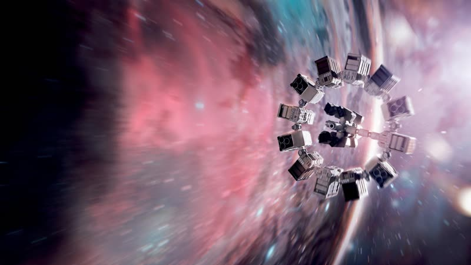
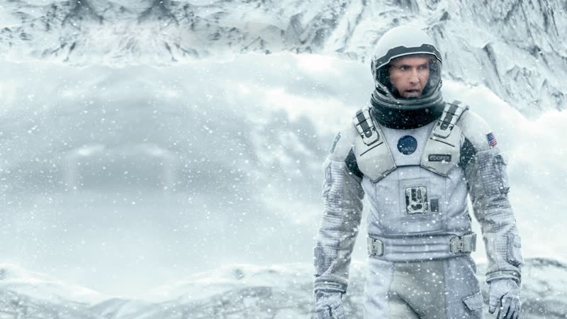
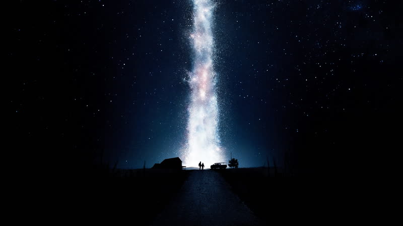
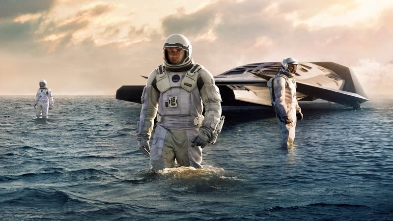
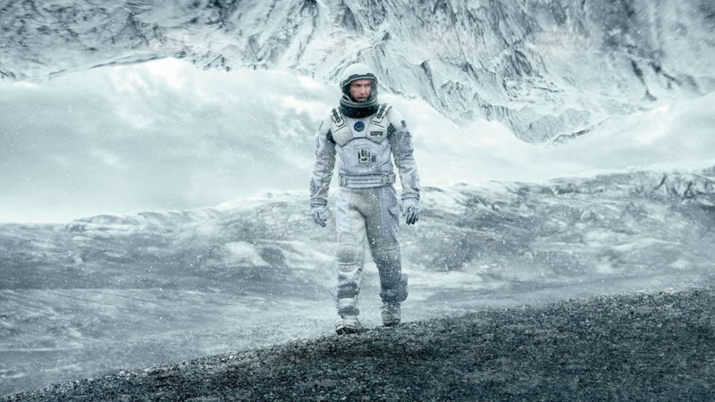

2014
Interstellar
With Earth failing, a former pilot leaves his children to fly through a wormhole in search of a new home, while relativity quietly steals the years he is trying to save.
How it plays with time
Time runs at different speeds for different characters. A short stay near the black hole costs the crew decades, so Cooper's children age while he barely does, and the film cuts between his ship and a growing Murph on Earth. The final reunion reverses the usual order: the daughter is the old one, the father the young one. source
Themes
- Time
- After a brief landing on a water world near the black hole, the crew return to their ship to find that 23 years have passed for the man left aboard. The short trip has quietly cost them more than two decades. source
- Fathers and children
- Cooper has to leave his daughter behind for the mission. Years later he watches message after message from his grown children pile up on the ship, each one older than the last.
- The machine
- TARS, a blocky robot built from sliding slabs rather than a human shape, works alongside the crew with an adjustable honesty setting. Nolan has described the robot as a friendly counterpart to a famous earlier film computer. source
- Sacrifice
- Cooper detaches his module and falls toward the black hole so that the rest of the crew has enough momentum to continue the mission.
- Faith
- Brand argues for travelling to a distant planet because of love for someone she may never see again, and says that feeling might point to something the characters cannot measure.
Where it came from
- Nolan says his love of space adventure began with Star Wars and Close Encounters of the Third Kind, and he treats the film as a childhood dream realised. Christopher Nolan source
- TARS is a friendly nod to HAL from 2001, via an airlock joke. Christopher Nolan source
- Nolan consulted physicist Kip Thorne, who talked him out of letting a character travel faster than light; Nolan had at first called that non-negotiable. Kip Thorne source
- The project began with producer Lynda Obst and Thorne, building on their earlier work on Contact; Jonathan Nolan drew on the Dust Bowl and studied relativity at Caltech. Nolan also names Tarkovsky's Mirror for the elemental imagery and Jaws and Close Encounters for tone. Jonathan Nolan; Christopher Nolan source
- Hans Zimmer has said he wrote the film's core music from a single page about a father leaving a child, without being told it was science fiction. Hans Zimmer source unverified
Stills





Stills © their studios, used here for commentary and criticism.
People who keep coming back
- Hans Zimmer, composer: also batman begins, the dark knight, inception, the dark knight rises, dunkirk
- Lee Smith, editor: also batman begins, the prestige, the dark knight, inception, the dark knight rises, dunkirk
- Hoyte van Hoytema, cinematographer: also dunkirk, tenet, oppenheimer
- Jonathan Nolan, co-writer: also the prestige, the dark knight, the dark knight rises
- Michael Caine, Professor Brand: also batman begins, the prestige, the dark knight, inception, the dark knight rises, tenet
- Anne Hathaway, Dr. Amelia Brand: also the dark knight rises
- Matt Damon, Dr. Mann: also oppenheimer
How it was received
Critics split on the ambition: most praised the visuals, scale and score, while a minority found the exposition heavy and the final act over-reaching. Scores sit comfortably in favourable territory but below Nolan's biggest hits. Note the scores are current aggregates, not a snapshot from 2014. Metacritic 74 source. Rotten Tomatoes 73% source.
Audiences have embraced it far more than the early critics did: it reportedly tops Letterboxd's most-watched list at over seven million logged views, and the father-daughter story and the organ score are the usual praise. Figures come from a secondary report; the Letterboxd page itself did not show a rating. Letterboxd 4.4 as of 2026-05 source.
Three things most people miss
- The robot TARS is a deliberate, friendlier echo of HAL from 2001, through an airlock joke, and was built and puppeteered on set rather than made purely with computer graphics. source
- Gargantua's accretion disk is deliberately 'anemic': roughly as hot as the Sun's surface, so it glows in visible light without the lethal radiation a real disk would give off. Physics, not just taste, shaped what the crew could look at. source
- Nolan first insisted that faster-than-light travel stay in the story and dropped it only after Thorne explained why physics rules it out; the time-dilation planet was the idea he would not give up. source
Cast
Matthew McConaughey as Joseph Cooper; Anne Hathaway as Dr. Amelia Brand; Jessica Chastain as Murphy Cooper; Bill Irwin as TARS (voice and puppetry) and CASE (puppetry); Ellen Burstyn as elderly Murph.